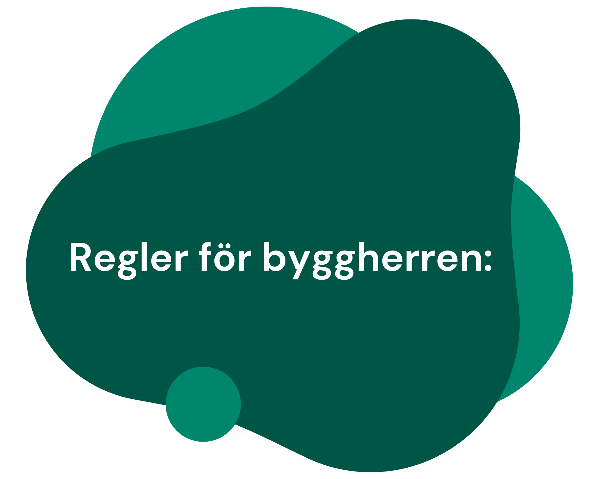

- Arbetet med att förebygga arbetsmiljörisker sker både under planeringen och projekteringen och under byggskedet.
- Förhandsanmäla byggprojektet till Arbetsmiljöverket (gäller byggnads- och anläggningsarbeten av en viss omfattning).
- Utse byggarbetsmiljösamordnare, Bas-P och Bas-U.
- Se till att en arbetsmiljöplan upprättas innan byggarbetsplatsen etableras, om det krävs en sådan.
- Att följa upp arbetsmiljöuppgifter är något som Bas-P och Bas-U ska göra genom hela byggprojektet.
- Under både byggskedet och bruksskedet ska arbetsmiljöarbetet överlämnas på ett strukturerat sätt, baserat på det arbete som gjorts under projekteringen.
- Aktörerna i projektet ska mötas och ha en dialog om arbetsmiljöfrågor.
- Byggherren måste ha kontroll över arbetsmiljöarbetet i alla skeden av projektet och säkerställa att det finns tillräckliga resurser för att genomföra detta arbete. Detta baseras på:
- Tidigare genomförda riskanalyser
- Bedömning av resurser som behövs
- Tidsplanering
- Identifierade arbetsrisker